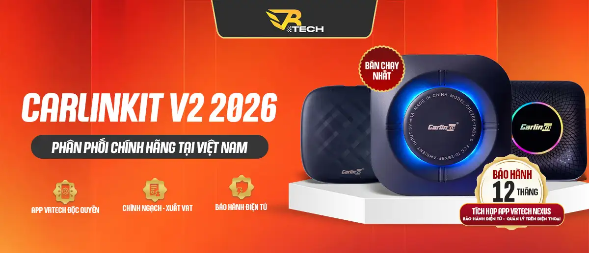

Chính sách bảo hành
CHÍNH SÁCH BẢO HÀNH CARLINKIT VN STORE x VRTECH
CARLINKIT VN STORE x VRTECH áp dụng chính sách bảo hành điện tử 12 tháng cho các sản phẩm TBOX V2 VRTECH / Carlinkit V2 2026. Khách hàng có thể kiểm tra trạng thái bảo hành, ngày kích hoạt, ngày hết hạn và thông tin thiết bị trực tiếp trên ứng dụng VRTECH Connect.
Bảo hành điện tử 12 tháng
Hỗ trợ kỹ thuật rõ ràng
Sản phẩm chính ngạch

Cam kết bảo hành chính hãng
CARLINKIT VN STORE x VRTECH cam kết cung cấp các sản phẩm TBOX V2 VRTECH / Carlinkit V2 2026 chính hãng, có nguồn gốc rõ ràng, hỗ trợ xuất VAT và được tích hợp hệ thống bảo hành điện tử VRTECH Connect.
Khi lựa chọn một thiết bị Android Box cho ô tô, khách hàng không chỉ quan tâm đến cấu hình, hiệu năng hay tính năng giải trí, mà còn cần một chính sách hậu mãi rõ ràng, minh bạch và đáng tin cậy trong quá trình sử dụng lâu dài.
Thời gian bảo hành
Tất cả sản phẩm TBOX V2 VRTECH / Carlinkit V2 2026 do CARLINKIT VN STORE x VRTECH phân phối được áp dụng chính sách bảo hành điện tử 12 tháng kể từ ngày kích hoạt hoặc ngày mua hàng hợp lệ.
Thông tin bảo hành được quản lý thông qua ứng dụng VRTECH Connect, giúp khách hàng dễ dàng kiểm tra trạng thái bảo hành, ngày kích hoạt và thời gian còn lại của thiết bị.
Ví dụ hiển thị trên ứng dụng
Đã kích hoạt
Ngày kích hoạt: 06/03/2026
Ngày hết hạn: 06/03/2027
Chính sách tham khảo từ mô hình bảo hành Android Box gồm bảo hành phần cứng do lỗi nhà sản xuất, miễn phí công sửa chữa và linh kiện nếu lỗi không phát sinh từ người dùng, đồng thời có quy trình tiếp nhận, kiểm tra và xử lý rõ ràng.
Phạm vi bảo hành
Sản phẩm được bảo hành trong các trường hợp sau:
- Sản phẩm phát sinh lỗi kỹ thuật từ nhà sản xuất.
- Thiết bị không hoạt động bình thường trong điều kiện sử dụng tiêu chuẩn.
- Lỗi phần cứng không do va đập, rơi vỡ, vào nước, cháy nổ hoặc can thiệp từ bên thứ ba.
- Lỗi phát sinh trong thời gian còn hiệu lực bảo hành điện tử.
- Sản phẩm còn đầy đủ thông tin mua hàng, mã thiết bị, số điện thoại mua hàng hoặc thông tin kích hoạt trên hệ thống VRTECH.
Quyền lợi khi bảo hành
Trong thời gian bảo hành 12 tháng, khách hàng được hỗ trợ:
- Kiểm tra và xác định lỗi thiết bị.
- Sửa chữa miễn phí nếu lỗi thuộc phạm vi bảo hành.
- Thay thế linh kiện phù hợp nếu lỗi phát sinh từ nhà sản xuất.
- Hỗ trợ phần mềm, cập nhật tính năng và hướng dẫn sử dụng.
- Theo dõi tình trạng bảo hành thông qua hệ thống bảo hành điện tử.
Thời gian xử lý bảo hành thông thường từ 2 - 5 ngày làm việc sau khi trung tâm tiếp nhận sản phẩm, chưa bao gồm thời gian vận chuyển.
Điều kiện để được bảo hành
Để được hỗ trợ bảo hành, sản phẩm cần đáp ứng các điều kiện sau:
- Sản phẩm còn trong thời gian bảo hành 12 tháng.
- Có thông tin mua hàng hợp lệ: hóa đơn, mã đơn hàng, số điện thoại mua hàng hoặc thông tin kích hoạt trên app.
- Tem bảo hành, mã thiết bị hoặc thông tin nhận diện sản phẩm không bị tẩy xóa, thay đổi.
- Lỗi được xác định là lỗi kỹ thuật từ nhà sản xuất.
- Sản phẩm chưa bị tháo mở, sửa chữa hoặc can thiệp bởi đơn vị không được ủy quyền.
Các trường hợp không được bảo hành miễn phí
CARLINKIT VN STORE x VRTECH có quyền từ chối bảo hành miễn phí trong các trường hợp sau:
- Sản phẩm bị rơi vỡ, móp méo, nứt vỏ, gãy cổng kết nối do tác động vật lý.
- Sản phẩm bị vào nước, ẩm mốc, oxy hóa hoặc cháy nổ.
- Thiết bị hư hỏng do sử dụng sai nguồn điện, sai cáp, sai phụ kiện hoặc lắp đặt không đúng cách.
- Sản phẩm bị tự ý tháo mở, can thiệp phần cứng hoặc sửa chữa bởi bên thứ ba.
- Tem bảo hành, mã serial, IMEI hoặc thông tin nhận diện bị rách, mất, tẩy xóa hoặc không còn xác minh được.
- Lỗi phát sinh do người dùng cài đặt phần mềm không tương thích, can thiệp hệ thống hoặc sử dụng sai hướng dẫn.
- Sản phẩm đã hết thời hạn bảo hành 12 tháng.
Các trường hợp loại trừ như vào nước, rơi rớt, va đập mạnh, can thiệp kỹ thuật từ bên thứ ba hoặc cháy nổ do nguồn điện không ổn định cũng là các điều kiện thường được loại khỏi phạm vi đổi hoặc bảo hành.
Chính sách hỗ trợ kỹ thuật
Ngoài bảo hành phần cứng, CARLINKIT VN STORE x VRTECH hỗ trợ khách hàng trong quá trình sử dụng thiết bị, bao gồm:
- Hướng dẫn kết nối Android Box với xe.
- Hướng dẫn sử dụng ứng dụng VRTECH Connect.
- Hỗ trợ kích hoạt bảo hành điện tử.
- Hỗ trợ kiểm tra trạng thái thiết bị.
- Hỗ trợ cập nhật phần mềm khi có phiên bản phù hợp.
- Hỗ trợ xử lý các lỗi cơ bản như kết nối Wi-Fi, Bluetooth, GPS, ứng dụng, màn hình hoặc âm thanh.
Chính sách hỗ trợ kỹ thuật dài hạn là một phần quan trọng trong trải nghiệm hậu mãi của Android Box, tương tự mô hình hỗ trợ sử dụng, cập nhật firmware, khôi phục cài đặt gốc và xử lý lỗi phần mềm.
Quy trình tiếp nhận bảo hành
- Liên hệ CARLINKIT VN STORE x VRTECH qua hotline, Zalo, fanpage hoặc kênh hỗ trợ chính thức.
- Cung cấp thông tin sản phẩm gồm tên thiết bị, mã đơn hàng, số điện thoại mua hàng, tình trạng lỗi và hình ảnh/video lỗi nếu có.
- Bộ phận kỹ thuật kiểm tra sơ bộ và hướng dẫn xử lý từ xa nếu có thể.
- Nếu cần kiểm tra trực tiếp, khách hàng gửi sản phẩm về trung tâm bảo hành theo hướng dẫn.
- CARLINKIT VN STORE x VRTECH tiếp nhận, kiểm tra, xử lý và phản hồi kết quả cho khách hàng.
- Sản phẩm được giao trả sau khi hoàn tất sửa chữa hoặc xử lý theo chính sách bảo hành.
Quy trình này được xây dựng theo hướng đơn giản, rõ ràng: liên hệ trước, gửi sản phẩm kèm thông tin mua hàng và mô tả lỗi, sau đó đơn vị tiếp nhận, kiểm tra, xử lý và giao trả sản phẩm.
Chính sách bảo hành điện tử VRTECH
Điểm khác biệt của TBOX V2 VRTECH là được tích hợp hệ thống bảo hành điện tử thông qua app VRTECH Connect.
Khách hàng có thể:
- Kiểm tra thiết bị đã kích hoạt bảo hành hay chưa.
- Xem ngày kích hoạt bảo hành.
- Xem ngày hết hạn bảo hành.
- Theo dõi thông tin thiết bị đang sử dụng.
- Quản lý thiết bị và gói dịch vụ trên điện thoại.
Điều này giúp quá trình bảo hành minh bạch hơn, hạn chế thất lạc phiếu bảo hành giấy và giúp khách hàng dễ dàng xác minh quyền lợi sau mua hàng.
Cam kết của CARLINKIT VN STORE x VRTECH
- Sản phẩm chính ngạch, nguồn gốc rõ ràng.
- Có hỗ trợ xuất VAT theo chính sách bán hàng.
- Bảo hành điện tử 12 tháng.
- Tích hợp app VRTECH Connect trong hệ sinh thái VRTECH Nexus.
- Hỗ trợ kỹ thuật và cập nhật lâu dài.
- Tối ưu phiên bản V2 cho người dùng Việt.
Khác biệt của TBOX V2 VRTECH không chỉ nằm ở thiết bị, mà còn ở trải nghiệm sử dụng lâu dài, chính sách hậu mãi rõ ràng và hệ sinh thái quản lý thiết bị chuyên nghiệp.